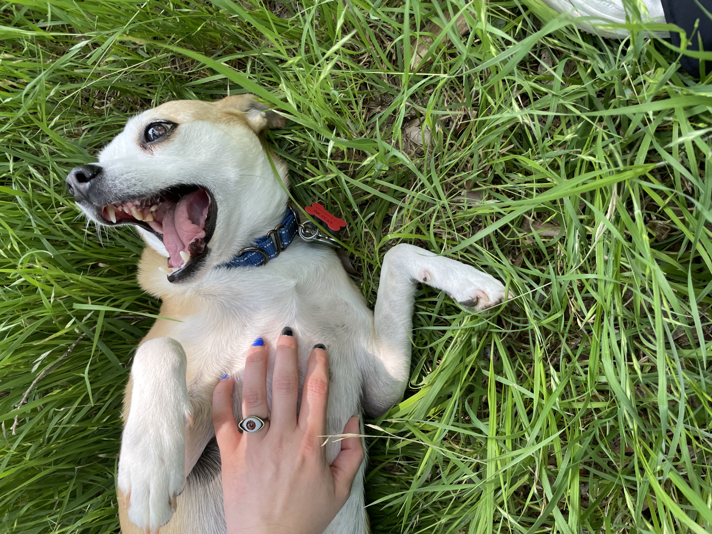

Hi, I’m Sloan.
I’m an Electrical Engineering and Applied Mathematics graduate from Texas State University with hands-on experience in hardware systems, signal analysis, and embedded development through project-based and research work. I’m motivated by design-driven engineering problems and enjoy using creative problem solving to optimize performance, reliability, and efficiency in complex systems.
This site is a quick way to explore my work. If you’re here from a QR code, start with Projects.
See Projects → Resume →Highlights
- Foundation Monitoring System: multi-sensor displacement tracking + UI pipeline
- Space Lab / HAB: custom scatter detector + constraints-driven design
- VLSI: 8-bit adder layout + verification
Experience
My engineering experience includes circuit and PCB design, embedded systems, sensor integration, signal processing, VLSI and digital design, control systems, and data analysis. My projects have involved both hardware and software development, with an emphasis on research, testing, troubleshooting, and improving system performance.
At Texas State Space Lab, I worked on a high-altitude balloon (HAB) project to develop a CO₂ scatter detector. Working with another student, I helped design and validate a detector chamber and custom PCB incorporating analog circuitry and photodiode sensing. The project required balancing power, mass, and environmental constraints while progressing from proof of concept to a functional design.
For my senior design project, I served as project manager for a multi-sensor foundation monitoring system designed to detect small structural movements. I coordinated team efforts, testing, technical documentation, and subsystem integration while leading data analysis and sensor evaluation. Using Python and Jupyter, I applied filtering and analytical methods to characterize sensor noise, compare performance, and improve measurement reliability. The project received the Industry Choice Award for electrical engineering projects at Texas State's Design Day.
My additional hardware and design projects include a guitar distortion pedal, an 8-bit full adder, and an analog PID controller. For the guitar pedal, I worked on circuit analysis, component selection, and PCB layout, using LTspice to evaluate operating points, frequency response, and transient behavior before developing the board layout in KiCad. My VLSI and controls projects involved transistor-level design, digital logic simulation, feedback control, and system response analysis.
My research and signal processing experience includes applying Python-based filtering and machine learning methods to IMU and pulsed coherent radar (PCR) datasets for noise reduction, feature extraction, and data analysis. I also completed a semester-long mathematics research project involving Fourier series, signal decomposition, and frequency-domain analysis.
About Me
Before pursuing engineering, I spent 13 years with the same company, developing experience in leadership, client relations, coordination, and problem-solving. That experience taught me the importance of reliability, adaptability, and taking pride in my work.
I eventually decided to change career paths and return to school in search of something more intellectually challenging. I started at community college without a specific career in mind, but after taking calculus, I discovered an interest in mathematics and problem-solving. That led me to pursue Electrical Engineering alongside Applied Mathematics and a minor in Computer Science at Texas State University.
Throughout college, I worked full-time while maintaining a full-time course load and funding my education entirely out of pocket. Balancing work, academics, and engineering projects required discipline, time management, and persistence, and I graduated in December 2025.
Outside of engineering, I enjoy traveling, painting, weightlifting, and playing guitar, bass, and drums. I've visited 12 countries and enjoy spending time with my dog, Jaxon, whom I rescued as a puppy.
